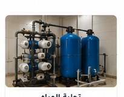
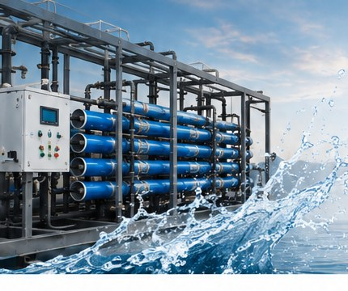
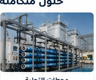
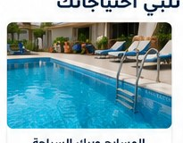
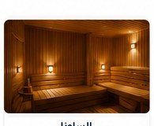
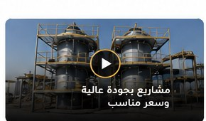
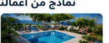
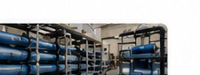
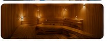
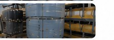

01
تحلية المياه
أنظمة تحلية للمنازل والمنشآت والمشاريع بجودة تشغيل عالية وكفاءة مناسبة للاستخدام.
اطلب التفاصيل ←متخصصون في تحلية المياه، تنفيذ محطات التحلية، وتجهيز المسابح والساونا بحلول عملية تجمع بين الجودة، الكفاءة، وحسن التنفيذ.

من تحلية المياه ومحطات RO إلى المسابح والساونا، نركز على تصميم الحل المناسب لطبيعة مشروعك.

أنظمة تحلية للمنازل والمنشآت والمشاريع بجودة تشغيل عالية وكفاءة مناسبة للاستخدام.
اطلب التفاصيل ←
دراسة وتصميم وتنفيذ محطات تحلية للمشاريع والمزارع والمنشآت، مع التشغيل والصيانة.
ناقش مشروعك ←
تجهيز المسابح بأنظمة الفلترة والتعقيم والمضخات وحلول تناسب المساحة والاستخدام.
ابدأ مشروعك ←
تصميم وتجهيز ساونا للمنازل والاستراحات والمنشآت مع حلول تشغيل وتحكم مناسبة.
اطلب التفاصيل ←نركز على وضوح الحل وجودة التنفيذ وسهولة التواصل؛ لأن المشروع الناجح يبدأ من فهم احتياجك وينتهي بتشغيل واضح يمكن الاعتماد عليه.
تحدث معنا ←نسمع احتياجك ونحدد نوع المشروع.
نبني تصوراً مناسباً للمساحة والاستخدام.
تنفيذ مرتب مع الاهتمام بالتفاصيل.
تسليم واضح وخيارات صيانة.





أرسل لنا نوع المشروع وموقعه وأي تفاصيل متوفرة لديك.
إذا لم تجد إجابتك، تواصل معنا مباشرة وسنساعدك.
تحلية المياه، محطات التحلية، تجهيز المسابح وبرك السباحة، وأنظمة الساونا، إضافة إلى التشغيل والصيانة حسب طبيعة المشروع.
نعم، يمكنك إرسال تفاصيل المشروع عبر واتساب أو نموذج الطلب، وسيتم التواصل معك لتحديد الاحتياج وتقديم العرض المناسب.
نخدم العملاء في السعودية، وتحدد إمكانية الزيارة والتنفيذ حسب موقع المشروع وطبيعته.
أرسل التفاصيل، وسنحوّلها إلى خطوة واضحة نحو الحل المناسب.